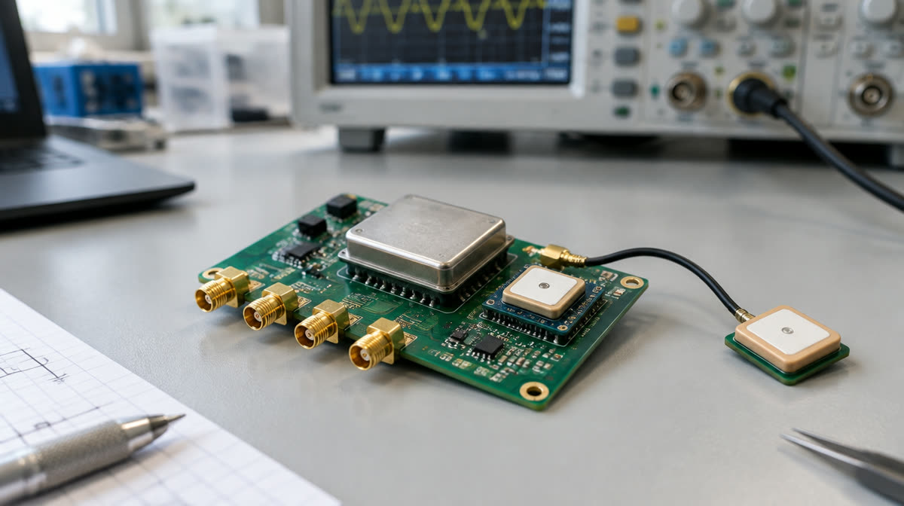
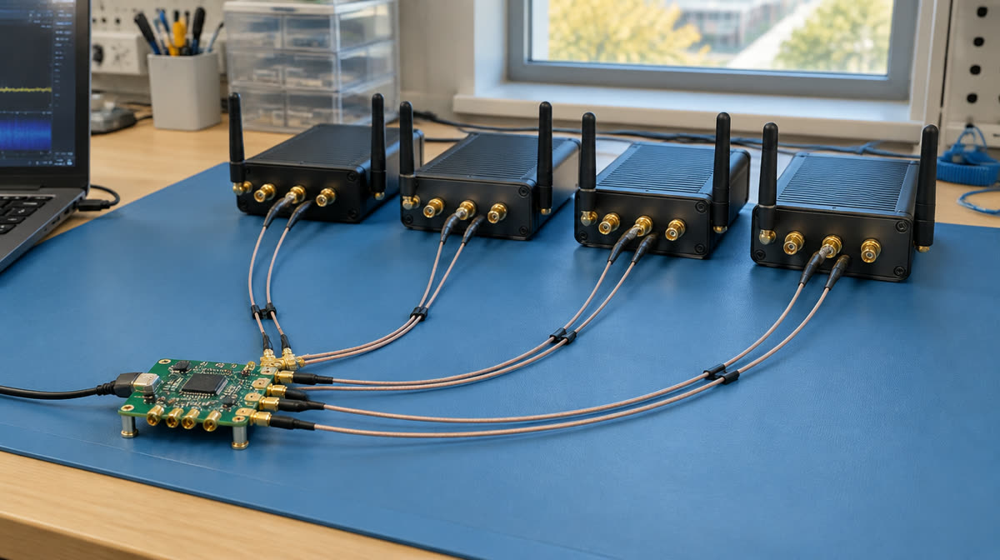
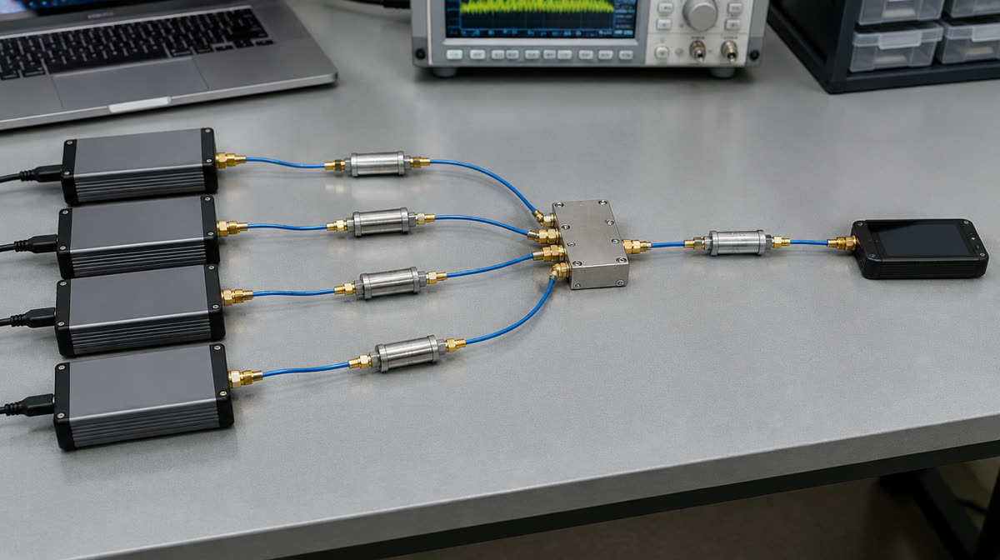
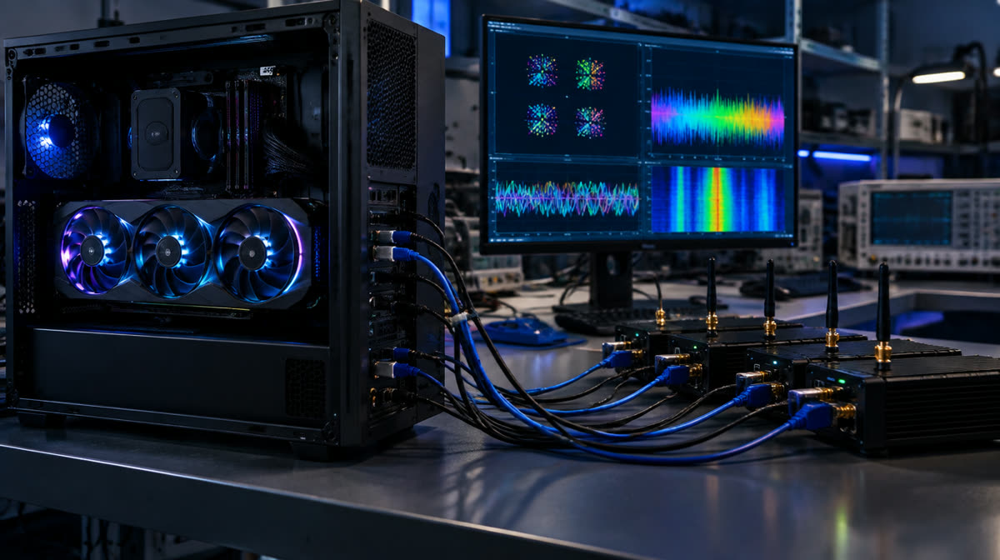
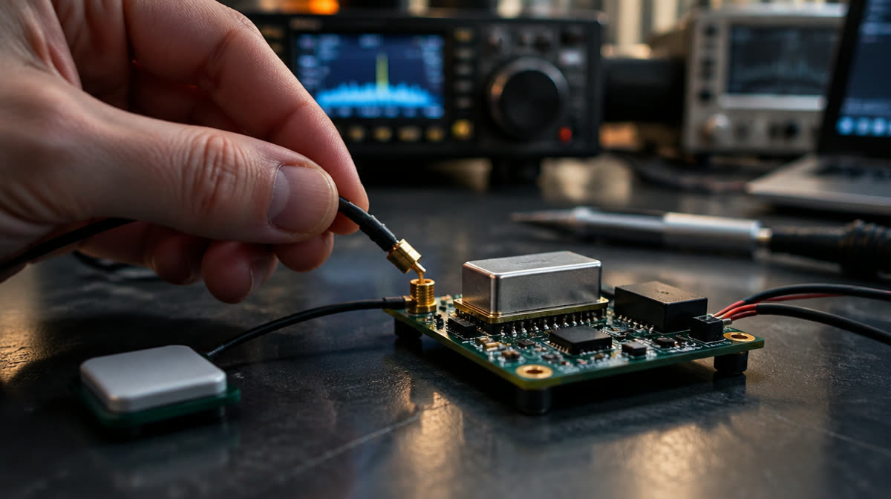

Several radios act as one antenna array, and a GPU combines their signals. That only works while the radios share time. The question: after GPS is lost, how long does the combining gain survive, and how much longer can a better oscillator plus drift prediction keep it?
Each site gets its own timing board, as real distributed sites would. Both share one GPS feed, so pulling that cable is a clean, repeatable outage. Baseline run: a single board feeds both radios, the ideal case where the radios can never drift apart.
What happens after GPS is lost
Expected shapes only, not data. The curves show the hypothesis. The pilot measures the real ones. The two limits are real: 3GPP sets a 3 µs cell-to-cell phase budget for TDD, and joint OFDM combining breaks down as the offset approaches the cyclic prefix.
Storyboard

1 · The timing boardYour PCB: GNSS receiver steering an OCXO, with 10 MHz and PPS outputs.

2 · Baseline wiringOne reference feeding every radio. The ideal case the sites are compared against.

3 · The RF pathTest transmitter through attenuators and a splitter into the radios. All by cable, so no licence and nothing radiated.

4 · Joint processingThe GPU host combines every radio's samples into one receiver and logs the gain.

5 · The outagePull the GPS feed. Every site is now running on its own oscillator.6 · Watching it driftOffsets climb toward the limit and the combined constellation starts to smear. The better the oscillator and prediction, the later that happens.
Storyboard images are AI-generated illustrations (Higgsfield). The diagrams above are the accurate reference.
One timing board, log oscillator versus GPS for a week
Fit a simple Kalman predictor; test on hidden outages
Stop here if prediction adds nothing measurable
The claim this could support: joint processing gives +X dB for cell-edge users; after losing GPS, a cheap clock keeps that gain for Y minutes, and an OCXO with drift prediction keeps it for Z hours. X, Y and Z come from the measurements.